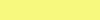
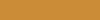
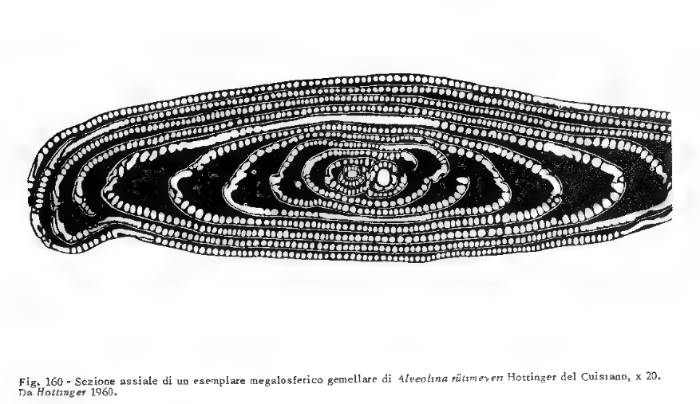
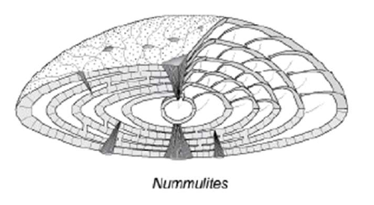
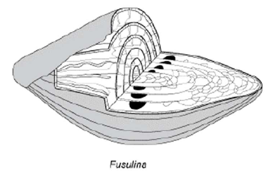

16 marzo 2025
Fanti in [PDF8]:
Sistematica: studio scientifico di esseri viventi e
fossili con gli obiettivi di classificazione e
nomenclatura univoche.
Classificazione: ordinamento degli essere viventi in
gruppi; l’ordinamento è basato sui caratteri comuni degli esseri
viventi; i gruppi sono nell’ambito di un sistema gerarchico.
Tassonomia: insieme di regole da usare nella
classificazione.
Nomenclatura: insieme di regole per denominare e
descrivere gli esseri viventi oggetto della sistematica.
Secondo Allasinaz [AA p.187] le categorie superiori alla specie sono oggetto di discussione fra gli studiosi: per alcuni sono artificiali e arbitrarie; per altri sono sì arbitrarie ma possono essere istituite secondo principi evolutivi; per altri sono invece del tutto naturali.
Fanti in [PDF8] indica queste categorie:
| Nome | Note |
|---|---|
| Phylum | (pl. Phyla) |
| Classe | (-a) |
| Ordine | (-ata o -ida) |
| Famiglia | (-idae) |
| Genere | |
| Specie |
| name | end | begin | timespan | |
|---|---|---|---|---|
|  | quaternario | 0 | 2.58 | 2.58 |
|
|
neogene | 2.58 | 25 | 22.42 |
|
|
paleogene | 25 | 65 | 40 |
|
|
cretacico | 65 | 145 | 80 |
| giurassico | 145 | 200 | 55 | |
|
|
triassico | 200 | 250 | 50 |
|
|
permiano | 250 | 300 | 50 |
|
|
carbonifero | 300 | 360 | 60 |
|  | devoniano | 360 | 420 | 60 |
|
|
siluriano | 420 | 445 | 25 |
|
|
ordoviciano | 445 | 485 | 40 |
|
|
cambriano | 485 | 540 | 55 |
|
|
neoproterozoico | 540 | 1000 | 460 |
| mesoproterozoico | 1000 | 1600 | 600 | |
|
|
paleoproterozoico | 1600 | 2500 | 900 |
|
|
neoarcheano | 2500 | 2800 | 300 |
|
|
mesoarcheano | 2800 | 3200 | 400 |
|
|
paleoarcheano | 3200 | 3600 | 400 |
|
|
eoarcheano | 3600 | 4030 | 430 |
Applicazioni:
biostratigrafia = datazione dei corpi sedimentari
ricostruzioni paleoambientali = definire l’ambiente deposizionale
Nella maggior parte dei Foraminiferi le camere sono disposte secondo una spirale che può essere piana (avvolgimento planispirale) o rialzata (avvolgimento trocospirale). [MBC p35]
Vicino alla costa (laguna, mare bassa profondità) c’è prevalenza di bentonici, allontanandosi dalla costa compaiono anche i planctonici.
Interpretare la paleobatimetria considerando l’associazione a foraminiferi di un campione di sedimento.
I foraminiferi bentonici generalmente aumentano di numero dalle zone costiere fino al limite superiore della scarpata. Poi diminuiscono piuttosto rapidamente.
In generale i foraminiferi bentonici come la biomassa bentonica sono proporzionali alla distribuzione della concentrazione di carbonio organico nel sedimento, che è alta nella piattaforma continentale fino al limite superiore della scarpata, poi diminuisce.
Ruolo dominante dei nutrienti e subordinato di altri fattori (temperatura, salinità, substrato, circolazione nel bacino).
Si calcola l’“Indice di oceanicità”:
P = numero di planctonici
contati.
B = numero di bentonici
contati.
Indice di oceanicità: $I=100\frac{P}{P+B}$
Poi si usa una formula esponenziale per calcolare la profondità D:
D = exp (3.58+0.03⋅I)
Non si può più parlare di sezioni equatoriali, nel vero senso della parola, nelle forme ad avvolgimento trocospirale: si parla in que sto caso di sezioni trasversali. [MBC p35]


| Famiglia | Nome comune |
|---|---|
| Nummulitidae | nummulite (s. f.), nummuliti (p. f.) |
Alveolina e nummulite sono associate, esistono dal Cretacico ad oggi.
| Alveolina | Nummulite |
|---|---|
 |
 |
Fusuline sono estinte, esistevano dal Carbonifero al Permiano.
| Fusulina |
|---|
|  |
La seguente distribuzione cronostratigrafica dei macroforaminiferi è tratta da [SCV-PDF4 p37/37].
| name | end | begin | Alveolinacea | Nummulitidae | Fusulinidae | |
|---|---|---|---|---|---|---|
| CZ | quaternario | 0 | 2.58 | X | X | |
|
CZ
|
neogene | 2.58 | 25 | X | X | |
|
CZ
|
paleogene | 25 | 65 | X | X | |
|
MZ
|
cretacico | 65 | 145 | X | ||
| MZ | giurassico | 145 | 200 | |||
|
MZ
|
triassico | 200 | 250 | |||
|
PZ
|
permiano | 250 | 300 | X | ||
|
PZ
|
carbonifero | 300 | 360 | X | ||
| PZ | devoniano | 360 | 420 | |||
|
PZ
|
siluriano | 420 | 445 | |||
|
PZ
|
ordoviciano | 445 | 485 | |||
|
PZ
|
cambriano | 485 | 540 |


Le categorie di appartenenza della seguente tabella sono tratte da [WFM]: Orbitolites Lamarck, 1801 †
| Categoria | |
|---|---|
| Phylum | Foraminifera |
| Classe | |
| Ordine | |
| Famiglia | |
| Genere | Orbitolites |
| Specie |


![Al centro un esemplare dell’ordine spumellaria con la tipica forma sferica, sono visibili le spine radiali (vedi [SCV-PDF5 p12/20]).](2025-03-05/spumellaria_2.PNG)
[AA]
Andrea Allasinaz, “Paleontologia generale e sistematica degli
invertebrati”, Genova, 1992, ECIG UNIVERSITAS.
[Bellier]
Bellier J.-P., Mathieu R. & Granier B. (2010).- Short Treatise on
Foraminiferology (Essential on modern and fossil Foraminifera) [Court
traité de foraminiférologie (L’essentiel sur les foraminifères actuels
et fossiles)].- Carnets de Géologie - Notebooks on Geology, Brest, Book
2010/02 (CG2010_B02), 104 p., 15 figs, 10 pls. http://paleopolis.rediris.es/cg/BOOKS/CG2010_B02/
[FF-PDF8]
Federico Fanti, “CLASSIFICARE GLI ORGANISMI VIVENTI E FOSSILI”.
[MBC]
Maria Bianca Cita, “Micro Paleontologia”, Milano, 1983, Cisalpino
Goliardica.
[SCV-PDF2]
Stefano Claudio Vaiani, “Foraminiferi”.
[SCV-PDF3]
Stefano Claudio Vaiani, “Foraminiferi e batimetria”.
[SCV-PDF4]
Stefano Claudio Vaiani, “Macro foraminiferi”.
[SCV-PDF5]
Stefano Claudio Vaiani, “Radiolari”.
[WFM]
Hayward, B.W.; Le Coze, F.; Vachard, D.; Gross, O. (2025). World
Foraminifera Database. Accessed at https://www.marinespecies.org/foraminifera
on 2025-03-29. doi:10.14284/305
Querschnitt = Sezione trasversale (tedesco).
f.=femminile
p.=plurale
pl.=plurale
s.=singolare